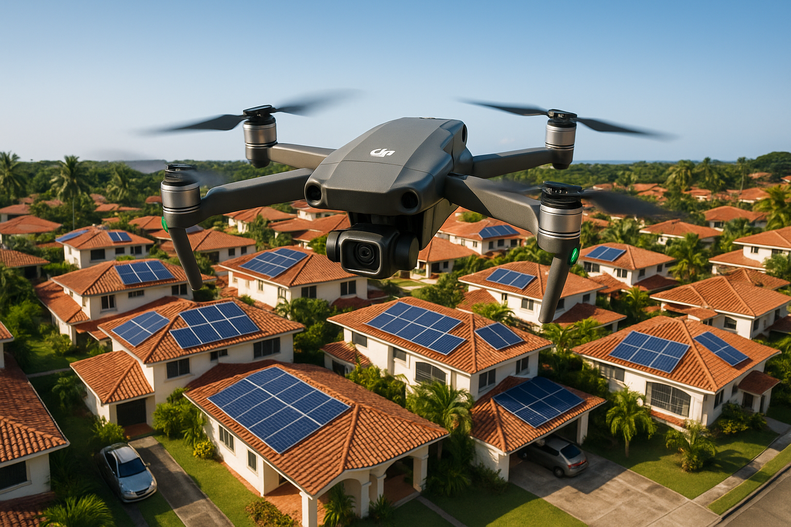

Precision aerial surveys for solar installations in Panama. Faster, safer, and more accurate than manual roof assessments.

WHY DRONESDrone-based site surveys eliminate the need for ladders, reduce safety risks, and deliver millimeter-precision data that transforms solar system design accuracy.
Tested and proven options for solar site surveys in Panama's tropical conditions. All models produce imagery suitable for photogrammetry and design software.
The DJI Air 3 offers the best balance of price, image quality, and flight time for our Azuero Peninsula operations. Its dual-camera system captures both wide-angle overviews and detailed close-ups in a single flight. The 249g Mini 4 Pro is ideal as a backup or for quick residential surveys.
Complete every item before launching. Panama's tropical weather can change rapidly — always check conditions within 30 minutes of flight.
Two-pass approach: nadir (straight-down) for measurements, then oblique for obstacle and shading identification. Both passes are critical for complete survey data.
Fly at 30 meters above ground level with camera pointed straight down (90°). Use automated grid/waypoint mode. Maintain 70% front overlap and 65% side overlap between images. This produces the orthomosaic map used for precise roof measurements and panel layout.
Lower to 20 meters and capture images at 45° angle orbiting the structure. This reveals roof edge conditions, gutter profiles, mounting surfaces, and obstacles that are invisible from directly above. Capture all four compass directions.
Manually capture close-up photos of: electrical panel location, meter, existing conduit paths, roof penetrations (vents, pipes, skylights), structural connections, and any damage or deterioration. These are essential for engineering design.
Fly to 50m AGL and capture wide-angle shots showing the property in context: neighboring structures that may cast shadows, tree canopy extent, access roads for installation vehicles, and compass orientation reference points.
| Parameter | Nadir Pass | Oblique Pass |
|---|---|---|
| Altitude (AGL) | 30m | 20m |
| Camera Angle | 90° (nadir) | 45° |
| Front Overlap | 70% | 70% |
| Side Overlap | 65% | 65% |
| Ground Resolution | >5cm/px | >3cm/px |
| Flight Speed | 3–5 m/s | 2–3 m/s |
All commercial drone operations in Panama are regulated by the Dirección General de Aeronáutica Civil (DGAC). Compliance is mandatory for Solaris operations.
Every survey image must be usable for engineering design. Follow these standards to ensure consistent, high-quality deliverables.
Every drone survey produces a standardized report package for the engineering team and client proposal.
| Deliverable | Description | Format |
|---|---|---|
| Orthomosaic Map | Georeferenced top-down composite image of entire roof area | TIFF / PDF |
| Annotated Photos | Key images with marked obstacles, roof edges, mounting zones, and compass orientation | PDF / JPG |
| Roof Measurements | Area (m²), dimensions, tilt angle, azimuth for each usable roof section | PDF / CAD |
| Shading Analysis | Shade map showing obstruction zones at 9AM, 12PM, and 3PM throughout the year | |
| Site Recommendation | Go/No-Go assessment with recommended system size, panel layout, and any required structural work | |
| Raw Image Archive | All original images with GPS EXIF data, organized by flight pass | ZIP / Cloud |
Format: SOLARIS-[CLIENT]-[DATE]-[TYPE]-[SEQ]. Example: SOLARIS-MARTINEZ-20260309-NADIR-001.jpg. This ensures traceability across all projects and simplifies integration with design software.
Standard report delivery: 48 hours from site survey. Expedited (24h) available for priority clients at additional cost. Raw images shared same-day via cloud link for early engineering review.